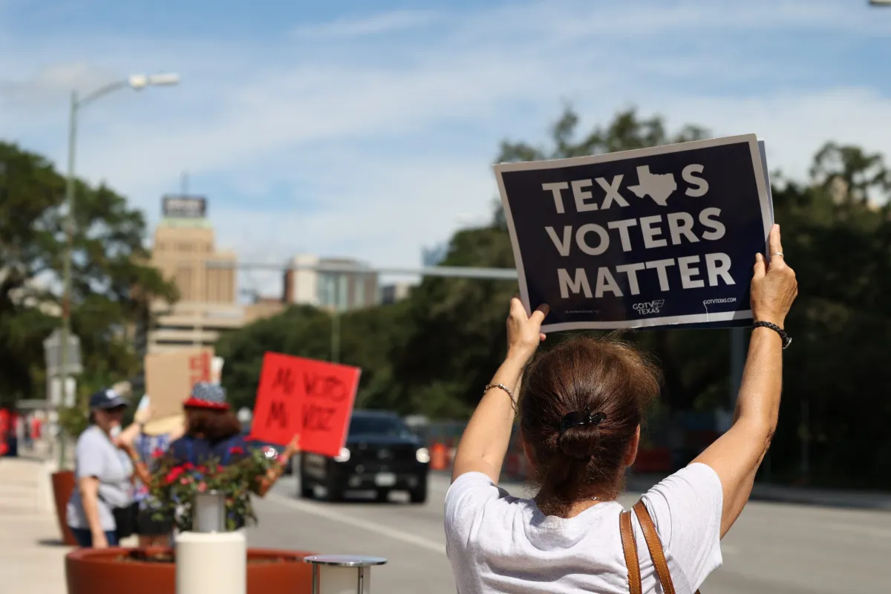

Voter Information

Register to Vote
- You must be a U.S. citizen, a Texas resident, and at least 18 years old on Election Day
- Your application must be received or postmarked at minimum 30 days before the election
- Check your registration status at: VoteTexas.gov
Important Dates for the 2026 General Election
- October 5th, 2026: Voter registration deadline
- October 19th, 2026: Early voting period begins
- October 30th, 2026: Early voting period comes to a end
- November 3rd, 2026: Election Day!
- Polls are scheduled to be open from 7 a.m. to 7 p.m. on Election Day
Voter Identification
- Texas elections require an accepted form of photo identification when voting in person
- Examples: Driver's license, personal ID card, passport, or Texas Election Identification Certificate
- Certain alternatives are available. Find out more at: Identification Requirements for Voting
Finding a Polling Place Near You
- Polling locations depend on your county and election. Check your location and the applicable voting hours before departure.
- Find out more at Polling Place Locator
Early Voting & Voting by Mail
- Any registered voter can vote early in person from October 19th to 30th
- To vote by mail, you must be classified as an eligible voter through specific criteria. For instance, being 65 years of older, having a qualifying disability or illness, being absent from your county during the voting period, or qualifying under specific confinement circumstances.
- For this election, the application deadline for a mail ballot is October 23th, 2026